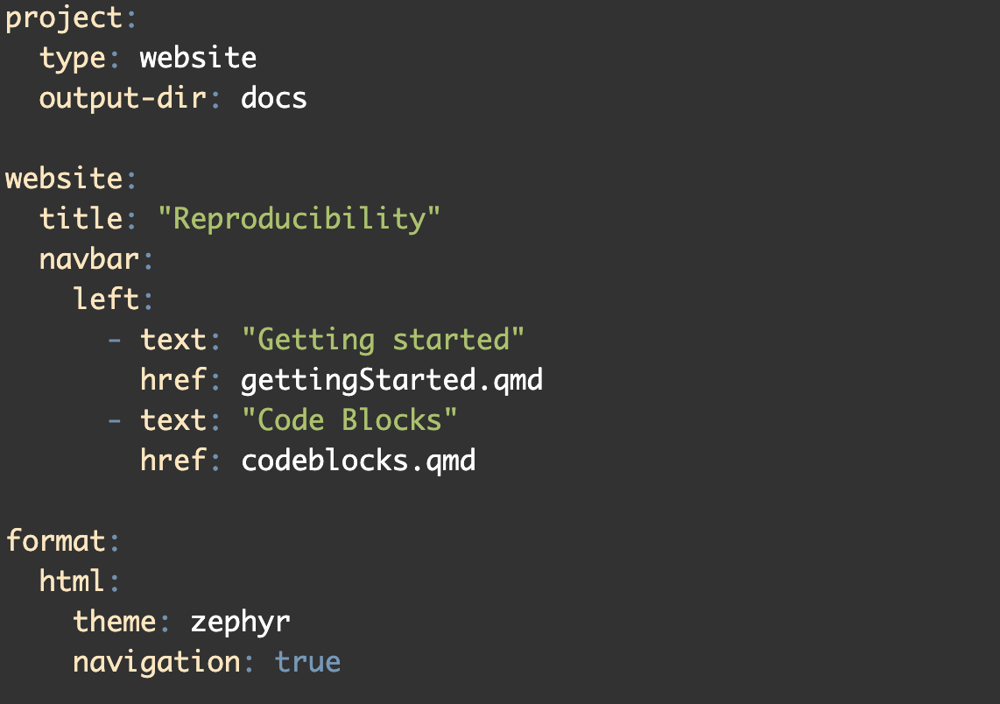

Projects: books and websites
Challenge
First, a challenge: What’s special about this page title? Specifically, what do I need to do when creating this .qmd file to make sure this renders?
This page title contains a colon. Since colons are used to separate the key-value pair in the page YAML header, I need to make sure that the title is wrapped in quotation marks.
Aims
Recognise sensible directory structure and appreciate how consistent structure aids reproducibility and collaboration.
Understand what a Quarto project is and when to use one.
Create and configure a basic Quarto project with _quarto.yml.
Learn how _quarto.yml controls project-wide behavior (rendering, format, options).
Project Directory Structure
Project structure and management are an important aspect of reproducible research. We want to build habits that support:
Transparency: Other people (and of course - future you) must be able to understand your workflow.
Reproducibility: Define and clearly show what the expected inputs and outputs are.
Collaboration: Having a consistent structure makes it easier for collaborators and teams to work together.
Modularity: Each component of a workflow should be something that can be isolated, tested, and reused in new contexts.
Key practices for project layout
Some key practices to keep in mind include:
Separate directories for Raw and Processed Data.
- Raw and Processed Data will probably be included in your .gitignore file so that it is not uploaded to github.
Scripts directories could be split by work stage (e.g., preprocessing/analysis/visualisation) or by type (e.g., R/Bash).
Output directories should contain subdirectories for each type of output (figures/tables).
Configuration files (_quarto.yml, styles.css, README) should sit in the main project directory.
Global naming convention across projects.
An example directory structure
my-genomics-project/
├── _quarto.yml
├── index.qmd # Project overview or README
├── about.qmd # Team/project info
├── data/
├── raw/
└── processed/├── scripts/
├── qc/
├── analysis/
└── visualizations/├── results/
├── figures/
└── tables/├── images/ # Diagrams, logos
└── docs/ # Optional: exported PDFs or other formats
Group discussion exercise
Have you ever inherited a project that did (or did not) adhere to the above principles? How did this impact you?
Consider your own current projects. If you (or a supervisor) were to leave work at 5pm and not return, what would the inheritors of this project think?
How much work would be involved in getting your current or previous projects from where they are now to a point where you would be happy to receive them?
Quarto Projects
So far we have worked under the assumption that we are creating a single, brief document (e.g., a 10-page pdf, short html document etc.,). A project is a larger structure and will usually contain multiple individual documents all linked together. Examples of projects are books or multi-page websites.
We should also think about projects in terms of directory structure. We want to develop the habit of creating a clear and consistent directory structure for each of our projects, one that will be easy for other users to navigate and interpret.
Quarto Projects and _quarto.yml
Specifically, a project is a directory that contains a high level file that provides information and structure to the other files: the _quarto.yml file. The _quarto.yml file is required to link individual pages together and provides options for navigation menus. Once a _quarto.yml file is in place in a directory, rendering any .qmd file in the directory will render all files in that directory - but only those that are linked through the _quarto.yml file will appear in the document.
If you have been following along you should have two .qmd files (Getting Started and Code Blocks). We will now build a new _quarto.yml file and use it to link the two existing pages into a single site. We will break this simple _quarto.yml into three sections: project information, website information, and format information.
Sometimes a directory will contain files we don’t want to render - they may be large, or basic scratch notes, etc.,. To exclude files from the render process, rename them to start with an underscore (like with the _quarto.yml file).
Project information
This file is essentially a YAML header for the whole project. Options here will be global for all files. We can see three discrete blocks of information in the above example:
First we specify information about the project itself. This will include specifying the type of project, in this case website but alternatively a book/article/etc.,. Also nested under the project key we are going to specify the output directory for all rendering - we could render straight into the working directory, but we want to abide by good project structure and specify where our output files are going. We need to specify the output dir as “docs” to be able to publish the website later.
Second we have a block containing information about the output document. Because we are working on a website, we used the “website:” key and will use this to set the title and add a navigation bar. Under the navigation bar we link all the .qmd files we want to include with this website. When we are manually selecting .qmd files to include we must set both the title with the text argument and the filename with the href argument. There are a lot of additional options available to us in this block such as: top/side navigation bars of different styles, auto-generated contents, LinkedIn/Github icons etc., which we will cover later.
Third we can control the look of the website with format options. We specify that we are working with an html-type output and can choose from a set of pre-built themes to customise the look of the document. We can also specify a css file, where we provide a styles.css file that further customises our website (e.g., brand colours, hyperlink visuals). We will look at creating a styles.css file later.
Remember, the _quarto.yml file is essentially a YAML header for the whole document and is very fussy about indentation, spacing (between key-value pairs), and all format arguments.
Render this document from one of the existing .qmd files. You cannot render from the _quarto.yml file itself.

We will look at the _quarto.yml options in more detail in the next section.
Exercise: _quarto.yml themes and options
Change the theme in the _quarto.yml file to one of the 25 pre-built options (listed below). Render the document and view the outcome.
default
cerulean
cosmo
cyborg
darkly
flatly
journal
litera
lumen
lux
materia
minty
morph
pulse
quartz
sandstone
simplex
sketchy
slate
solar
spacelab
superhero
united
vapor
yeti
zephyrImmediately under the navbar line, add a new line (indented from navbar) and add “pinned: true”. What effect does this have?
Summary
Sensible directory structures enhance reproducibility and make collaboration easier.
Quarto projects are a directory containing multiple .qmd files linked by a _quarto.yml document.
Basic _quarto.yml files control the structure of the output website/book, and can control all visual elements.